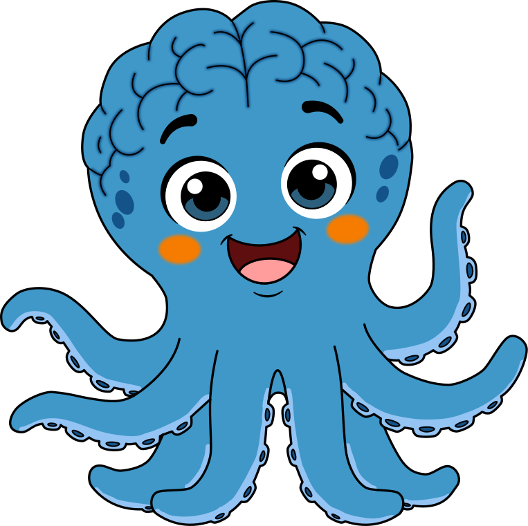
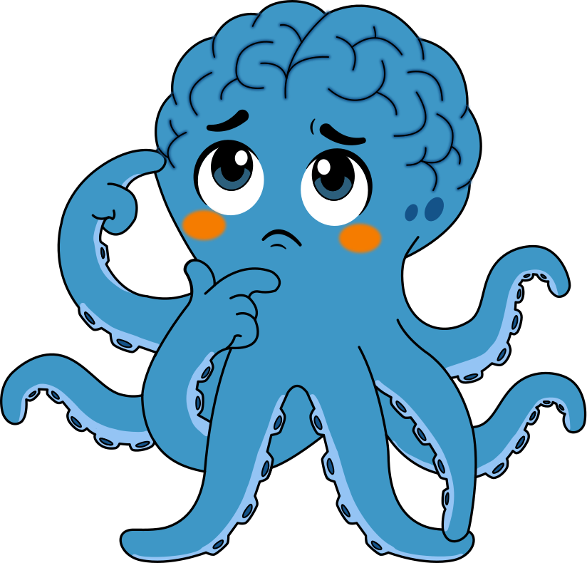
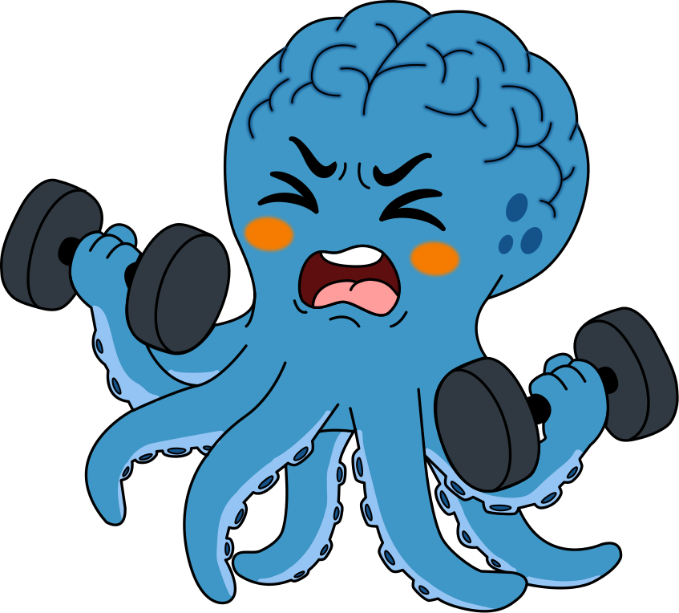
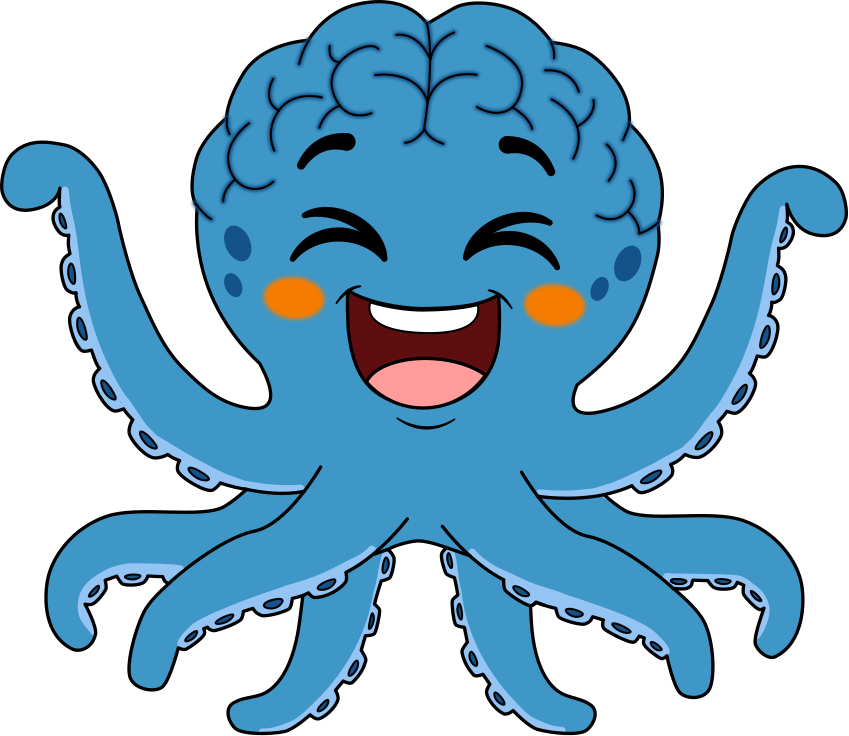
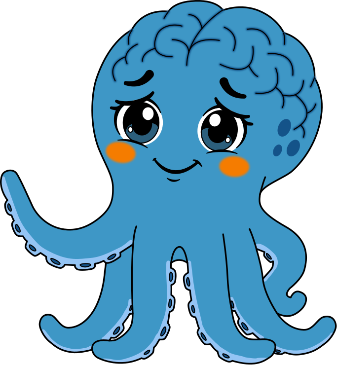
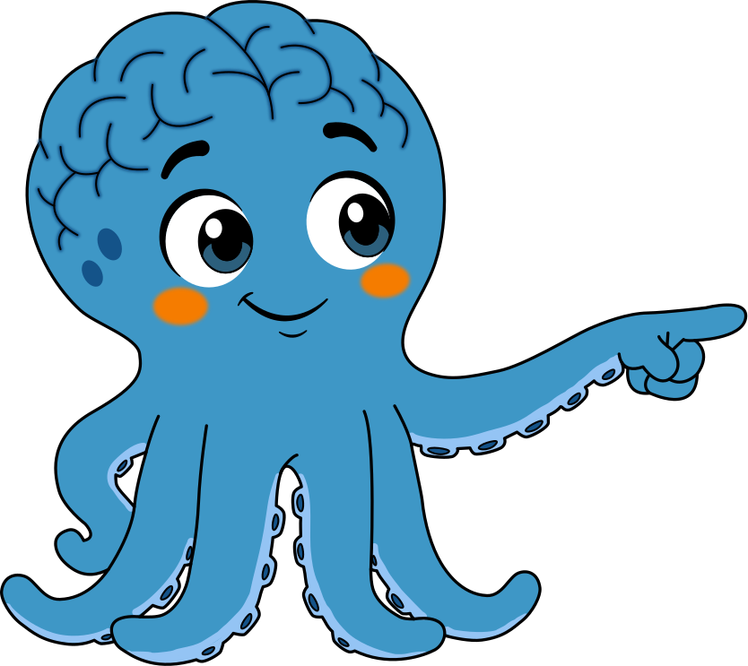
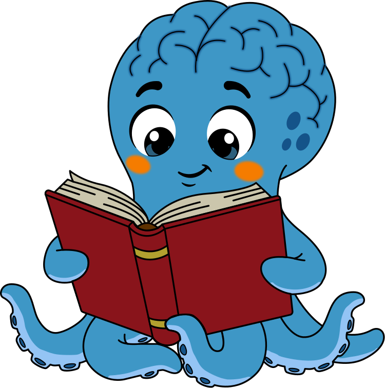
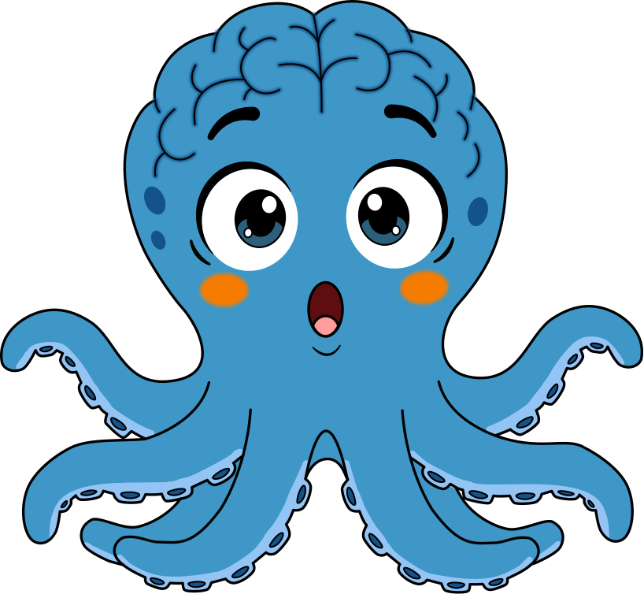

El Gimnasio del Cerebro
¡Hola!
Soy Oki.
Y vengo a contarte un secreto sobre tu cerebro.

¿Por qué un pulpo?
Dicen que el pulpo tiene 9 cerebros.
Tiene uno central, y cerca de dos tercios de sus neuronas están repartidas en sus 8 brazos. Cada brazo resuelve cosas por su cuenta, pero todos trabajan en equipo.
Tu cerebro también tiene un equipo de habilidades que trabajan juntas.

Ese equipo tiene nombre
Funciones ejecutivas
Memoria de trabajoSostener información mientras la usas.
AtenciónEnfocarte en lo importante y sostenerlo.
AutocontrolFrenar antes de actuar.
FlexibilidadCambiar de plan cuando algo no sale.
El secreto
Se entrenan como un músculo. A cualquier edad.
0–15
Niños4 fases según su edad
Aula
ColegiosFormación docente
18–50
AdultosInglés que entrena el cerebro
65+
Adulto VitalProteger la mente

¿Lo pruebas?
Ven a conocer el Gimnasio del Cerebro
Tu primera clase de prueba es gratis.
›WhatsApp 301 491 6120
›gimnasiodelcerebro.co
›Rionegro, Antioquia

Para papás y mamás
¿Tu hijo se distrae o se rinde fácil?
No significa que “no pueda”. Significa otra cosa.

Piensa en un gimnasio
Nadie levanta el peso máximo el primer día.
El músculo se fortalece con repetición, exigencia progresiva y descanso.
Con el cerebro pasa algo parecido: hay habilidades que no nacen desarrolladas. Se entrenan.
Memoria de trabajo
Es como cargar las bolsas del mercado.
Dos o tres bolsas, sin problema:
Pero si te dan una quinta, se te caen todas:
Si la profe da una instrucción con muchos pasos, “se le caen las bolsas”. No es que no escuchó.
Autocontrol
Es como el freno de un carro.
Un freno que se ha usado poco responde tarde.
El niño que grita la respuesta antes de tiempo, o que empuja cuando se frustra, no es “mal portado”: tiene un freno que necesita más kilómetros de práctica.

Lo dice la ciencia
Diamond, 2013
Las funciones ejecutivas predicen el éxito escolar mejor que el coeficiente intelectual.
Entrenarlas tiene más impacto que perseguir “más inteligencia”.

Si te identificaste
Tu hijo no tiene nada “malo”. Está listo para entrenarse.
Agenda una clase de prueba gratuita y ven a ver cómo se entrena su cerebro.
›WhatsApp 301 491 6120
Reto Oki
Di el color, no la palabra.
3 niveles. En voz alta. Sin hacer trampa.
NIVEL 1
Calentamiento
VERDE
AMARILLO
BLANCO
NARANJA
NARANJA
VERDE
Fácil, ¿cierto? La palabra y el color coinciden.
NIVEL 2
Ahora sí
VERDE
AMARILLO
NARANJA
BLANCO
VERDE
NARANJA
Recuerda: el color, no lo que dice.
NIVEL 3 · 10 SEGUNDOS
Contra reloj
BLANCO
AMARILLO
VERDE
NARANJA
AMARILLO
BLANCO
VERDE
NARANJA
VERDE
¿Llegaste al final sin equivocarte?
¿Por qué cuesta tanto?
Tu cerebro lee en automático.
Para decir el color, tiene que frenar esa respuesta. Ese freno es el autocontrol, y se llama efecto Stroop (descrito en 1935).
Cuéntanos en los comentarios: ¿en qué nivel te equivocaste? 👇
